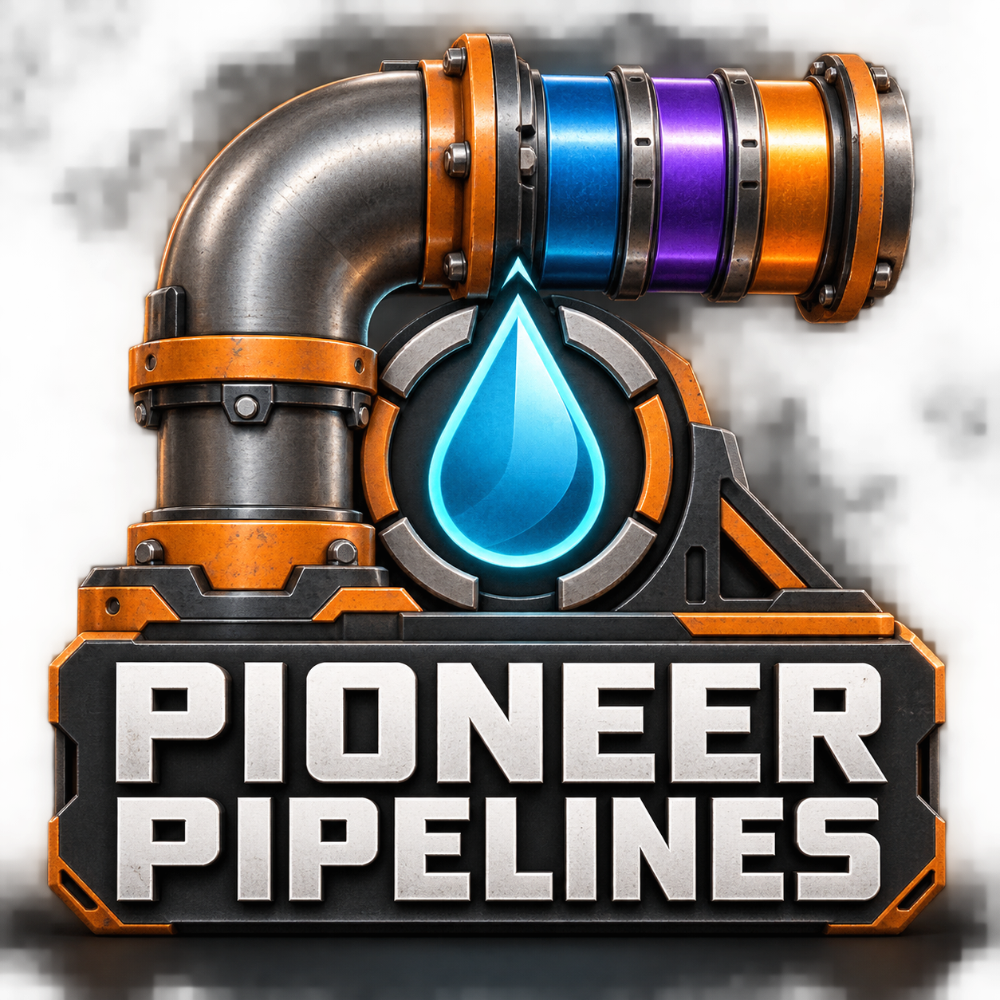
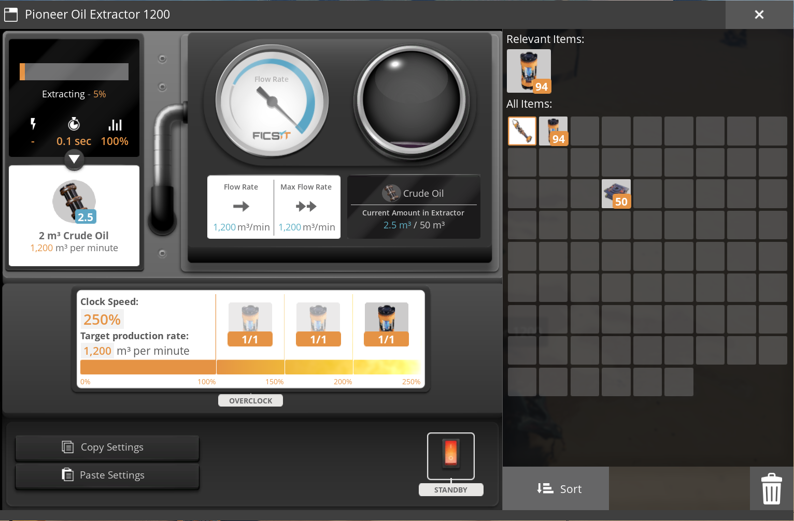
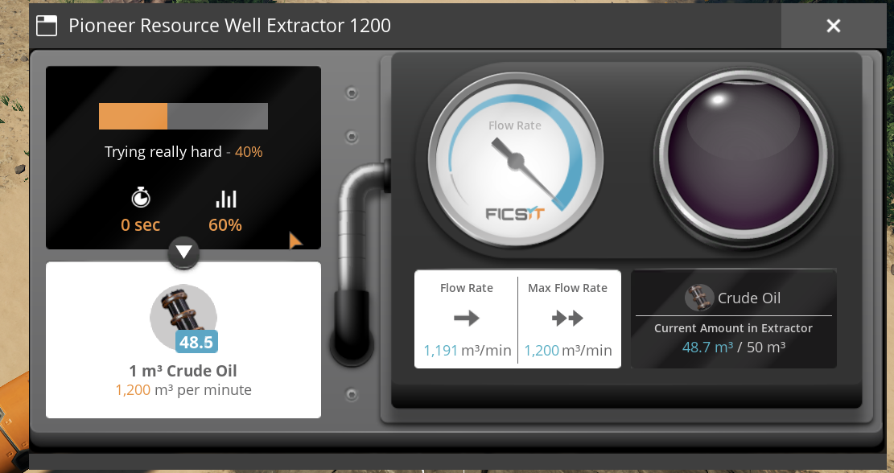
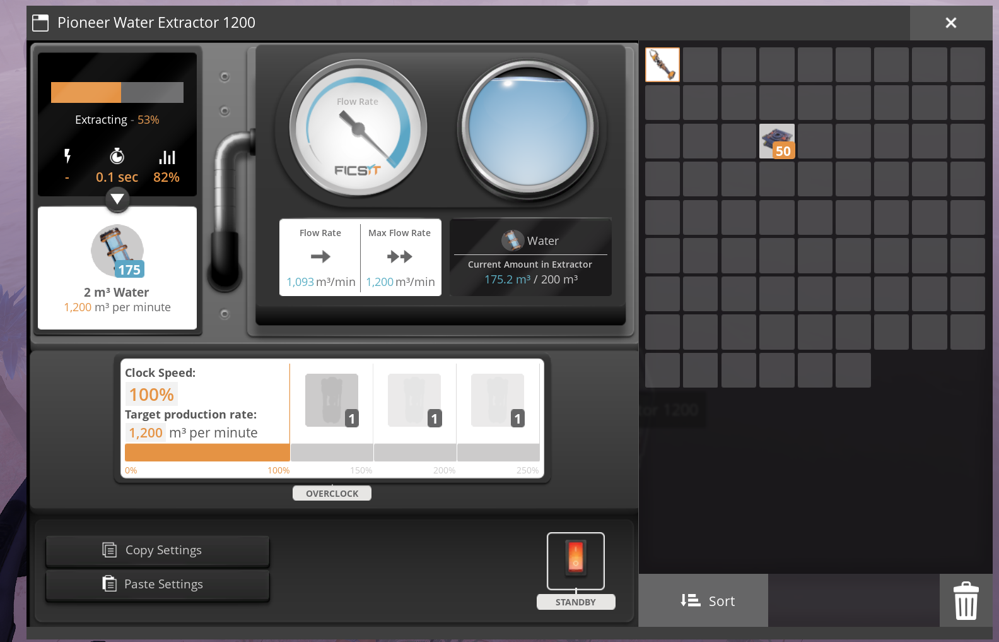
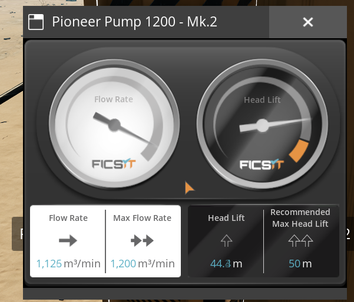
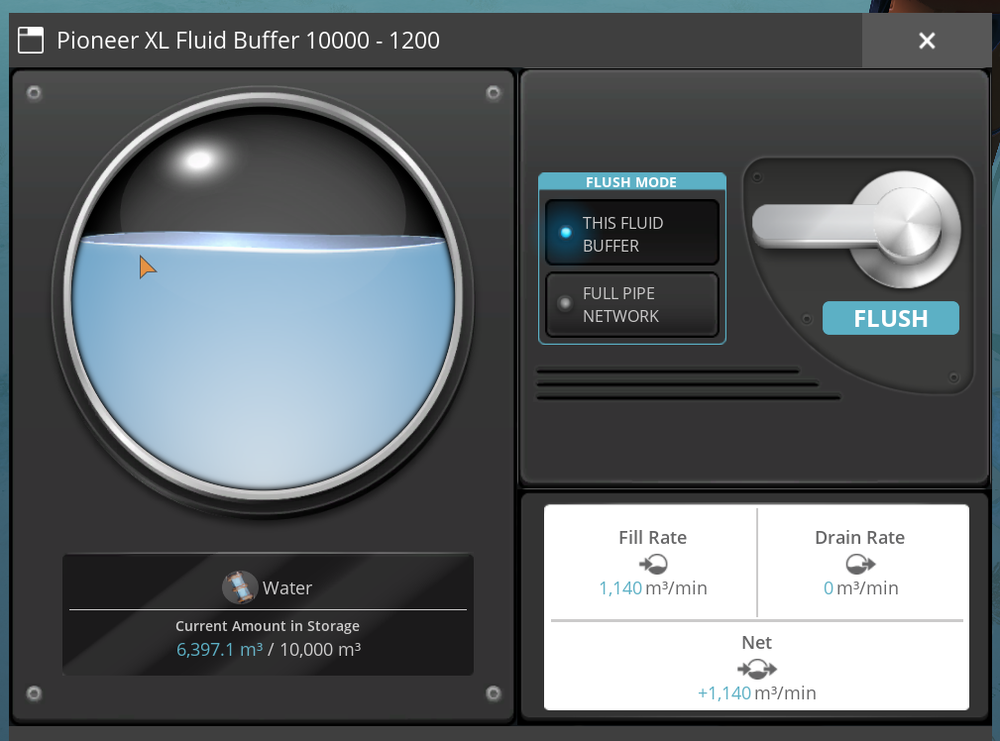
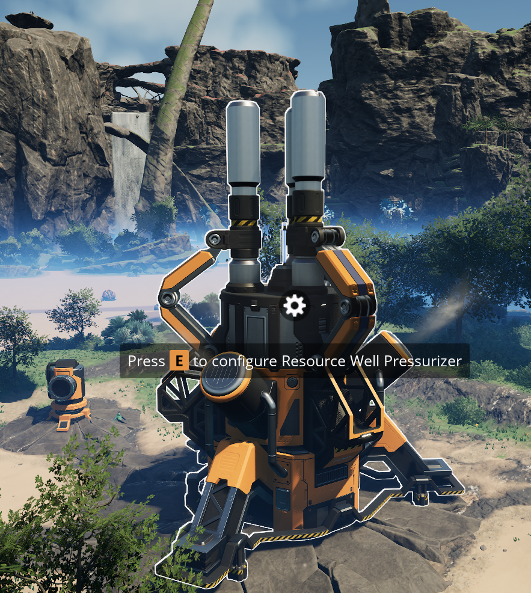
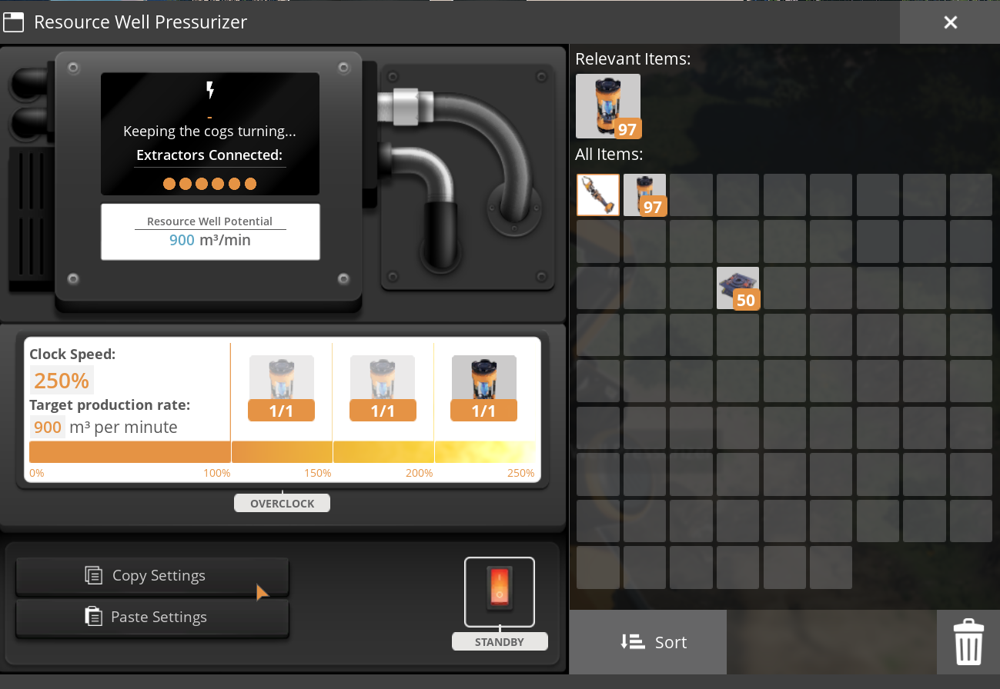
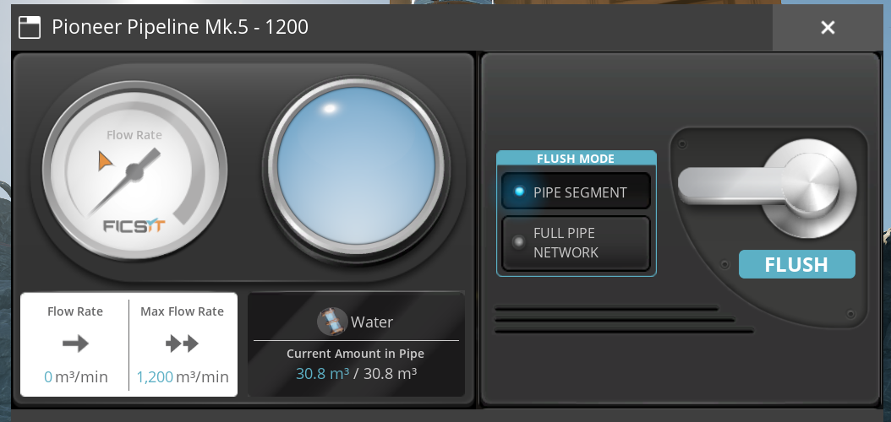

SATISFACTORY MOD · BY DOESEWICHT
More flow.
More possibilities.
Expand your fluid network with up to 1,200 m³/min, enhanced extractors and pumps with familiar head lift.
Explore the buildings ↗Version 1.1.0

1200m³/min pipe capacity
14playable buildings
20 / 50 mRecommended pump head lift
YOUR NETWORK. EXPANDED.
Transport, storage and extraction.
Pipeline Mk.4
Pipeline Mk.5
Pump Mk.1
Pump Mk.2
Valve
T-Junction
Cross Junction
Fluid Buffer
Industrial Fluid Buffer
XL Fluid Buffer
Water Extractor
Oil Extractor
Resource Well Extractor
Maximum capacity is not guaranteed throughput. Supply, demand, fill levels, head lift and bottlenecks still apply. Buffer connection rates are in m³/min.
FROM THE GAME
Extraction, storage and transport.
Screenshots show individual moments, not sustained-throughput benchmarks. Select an image to view the original.
{kind=link}

Oil extractor at 250% clock speed, showing 1,200 m³/min target production and flow.
{kind=link}

Resource well extractor showing a 1,200 m³/min production target and 1,191 m³/min instantaneous flow.
{kind=link}

Water extractor with a 1,200 m³/min production target at 100% clock speed.
{kind=link}

Pump Mk.2 with 1,200 m³/min maximum flow and 50 m recommended head lift.
{kind=link}

XL buffer with 10,000 m³ storage, showing a snapshot of its fill rate and stored water.
{kind=link}

The unchanged vanilla pressurizer activates the resource well and controls extractor clock speed. This is not an additional Pioneer building.
{kind=link}

The vanilla pressurizer still shows 900 m³/min potential in this setup. Its display does not account for enhanced Pioneer output; check the individual Pioneer extractor instead.
{kind=link}

GET STARTED
Two milestones.
A stronger network.
01 / Unlock in Tier 6
Advanced Fluid Transport unlocks the transport buildings, buffers, oil extractor and resource well extractor. The water extractor has its own milestone.
02 / Match your versions
Install the published mod package using Satisfactory Mod Manager. All clients and the server need the same version. Linux dedicated-server operation has been tested by the author.
03 / Overclock extraction
The oil and resource well extractors produce 120, 240 or 480 m³/min on impure, normal or pure sources at 100%. At 250%, those values become 300, 600 or 1,200 m³/min.
GOOD TO KNOW
Common questions.
Why does the pressurizer show a lower potential?
The standard pressurizer display does not account for the enhanced Pioneer resource well extractor. Check the individual extractor's production and flow values. The pressurizer still controls activation and clock speed.
Is the test sink included?
It is not playable release content. Its recipe and fluid disposal are disabled; legacy objects remain loadable for save compatibility.
Does every pipe deliver 1,200 m³/min?
No. Mk.3 supports 750, Mk.4 supports 900 and Mk.5 supports 1,200. Actual flow also depends on supply, demand and the rest of the network.
How do I report a problem?
Include the mod and game versions, game mode, reproduction steps and FactoryGame.log. For flow issues, include supply, demand, head lift and valve settings.